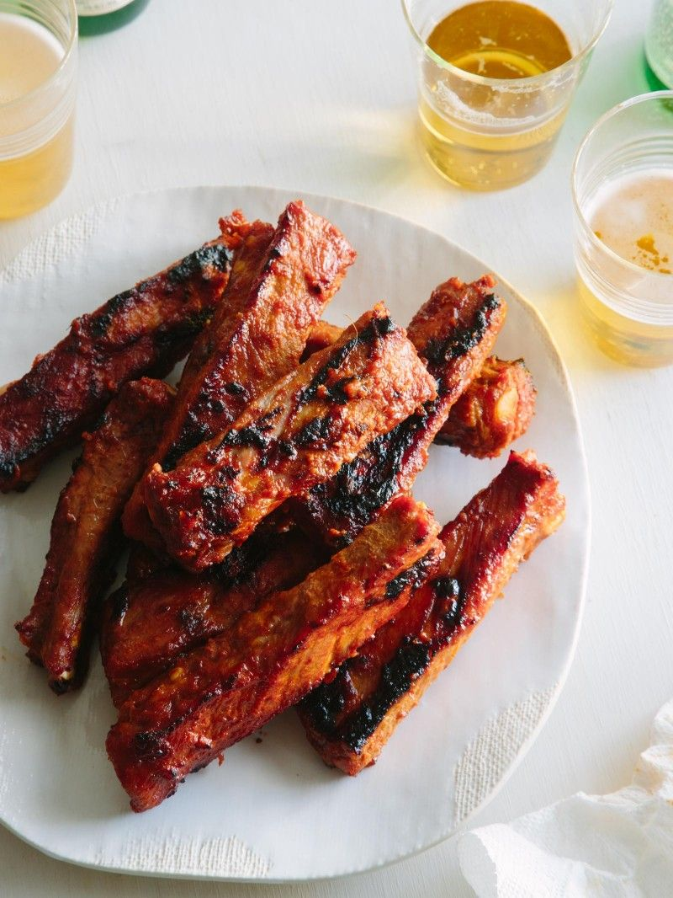

# Denver, 250g
39 zł.Najdelikatniejsza część karku z marmurkowej wołowiny
# Karkówka wieprzowa, 250g
25 zł.Stek wieprzowy
# Sznycel z indyka, 250g
25 zł.Stek z indyka
# Stek z łososia, 200g
35 zł.Stek z łososia
# Ribeye prime, 250g
55 zł.Premier Ribey. Najpopularniejszy stek na świecie. Gruba krawędź, mocno marmurkowa wołowina
# Striploin choice, 250g
48 zł.Cienka krawędź marmurkowej wołowiny. Składa się z jednego mięśnia i ma cienką warstwę tłuszczu po jednej stronie
# Chateaubrianda, 250g
45 zł.Gruby środkowy brzeg polędwicy wołowej z najmiększej i najdelikatniejszej części filetu.
# Filet mignon, 250g
45 zł.Środkowe cięcie wołowiny
# Maczeta, 250g
35 zł.Stek z zewnętrznej części przepony wołu marmurkowego, ma dość wysoką marmurkowatość i bogaty aromat wołowiny

Menu grillowe
# Grzanki żytnie, 200g
10 zł.Z sosem czosnkowym
# Żeberka grillowane, 350g
20 zł.Z sosem pieprzowym i sałatką coleslaw, grillowane na węglu drzewnym
# Szaszłyk z polędwicy wieprzowej, 460g
25 zł.Grillowany
# Mieszanka imprezowa smażonych kiełbasek bawarskich 970g
40 zł.Z frytkami i grzankami żytnimi (danie dla towarzystwa), grillowane na węglach
# Ryba Dorado ze smażoną cebulą, 310g
30 zł.Grillowany